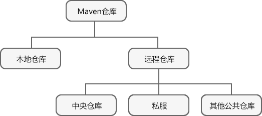

Maven仓库（本地仓库+远程仓库）
在 Maven 中，任何一个依赖、插件或者项目构建的输出，都可以称为构件。
Maven 在某个统一的位置存储所有项目的构件，这个统一的位置，我们就称之为仓库。换言之，仓库就是存放依赖和插件的地方。
任何的构件都有唯一的坐标，该坐标定义了构件在仓库中的唯一存储路径。当 Maven 项目需要某些构件时，只要其 POM 文件中声明了这些构件的坐标，Maven 就会根据这些坐标找自动到仓库中找到并使用它们。
项目构建完成生成的构件，也可以安装或者部署到仓库中，供其他项目使用。
当 Maven 根据坐标寻找构件时，它会首先查看本地仓库，若本地仓库存在此构件，则直接使用；若本地仓库不存在此构件，Maven 就会去远程仓库查找，若发现所需的构件后，则下载到本地仓库使用。如果本地仓库和远程仓库都没有所需的构件，则 Maven 就会报错。
远程仓库还可以分为 3 个小类：中央仓库、私服、其他公共仓库。
Maven 仓库的分类如下图。
Maven 本地仓库可以储存本地所有项目所需的构件。当 Maven 项目第一次进行构建时，会自动从远程仓库搜索依赖项，并将其下载到本地仓库中。当项目再进行构建时，会直接从本地仓库搜索依赖项并引用，而不会再次向远程仓库获取。
Maven 本地仓库默认地址为 C:\%USER_HOME%\.m2\repository ，但出于某些原因（例如 C 盘空间不够），我们通常会重新自定义本地仓库的位置。这时需要修改 %MAVEN_HOME%\conf 目录下的 settings.xml 文件，通过 localRepository 元素定义另一个本地仓库地址，例如：
中央仓库具有如下特点：
我们可以通过 Maven 社区提供的 URL：http://search.maven.org/#browse，浏览其中的构件。中央仓库包含了绝大多数流行的开源 Java 构件及其源码、作者信息和许可证信息等。一般来说，Maven 项目所依赖的构件都可以从中央仓库下载到。
Maven 在某个统一的位置存储所有项目的构件，这个统一的位置，我们就称之为仓库。换言之，仓库就是存放依赖和插件的地方。
任何的构件都有唯一的坐标，该坐标定义了构件在仓库中的唯一存储路径。当 Maven 项目需要某些构件时，只要其 POM 文件中声明了这些构件的坐标，Maven 就会根据这些坐标找自动到仓库中找到并使用它们。
项目构建完成生成的构件，也可以安装或者部署到仓库中，供其他项目使用。
仓库的分类
Maven 仓库可以分为 2 个大类：- 本地仓库
- 远程仓库
当 Maven 根据坐标寻找构件时，它会首先查看本地仓库，若本地仓库存在此构件，则直接使用；若本地仓库不存在此构件，Maven 就会去远程仓库查找，若发现所需的构件后，则下载到本地仓库使用。如果本地仓库和远程仓库都没有所需的构件，则 Maven 就会报错。
远程仓库还可以分为 3 个小类：中央仓库、私服、其他公共仓库。
- 中央仓库是由 Maven 社区提供的一种特殊的远程仓库，它包含了绝大多数流行的开源构件。在默认情况下，当本地仓库没有 Maven 所需的构件时，会首先尝试从中央仓库下载。
- 私服是一种特殊的远程仓库，它通常设立在局域网内，用来代理所有外部的远程仓库。它的好处是可以节省带宽，比外部的远程仓库更加稳定。
- 除了中央仓库和私服外，还有很多其他公共仓库，例如 JBoss Maven 库，Java.net Maven 库等等。
Maven 仓库的分类如下图。

图1：Maven 仓库分类
图1：Maven 仓库分类
由于私服在实际开发中十分的常用，也特别重要，因此本节只稍做介绍，关于 Maven 私服的详细介绍请阅读 Maven 私服。
本地仓库
Maven 本地仓库实际上就是本地计算机上的一个目录（文件夹），它会在第一次执行 Maven 命令时被创建。Maven 本地仓库可以储存本地所有项目所需的构件。当 Maven 项目第一次进行构建时，会自动从远程仓库搜索依赖项，并将其下载到本地仓库中。当项目再进行构建时，会直接从本地仓库搜索依赖项并引用，而不会再次向远程仓库获取。
Maven 本地仓库默认地址为 C:\%USER_HOME%\.m2\repository ，但出于某些原因（例如 C 盘空间不够），我们通常会重新自定义本地仓库的位置。这时需要修改 %MAVEN_HOME%\conf 目录下的 settings.xml 文件，通过 localRepository 元素定义另一个本地仓库地址，例如：
<settings xmlns="http://maven.apache.org/SETTINGS/1.0.0"
xmlns:xsi="http://www.w3.org/2001/XMLSchema-instance"
xsi:schemaLocation="http://maven.apache.org/SETTINGS/1.0.0
http://maven.apache.org/xsd/settings-1.0.0.xsd">
<localRepository>D:/myRepository/repository</localRepository>
</settings>
构件只有储存在本地仓库中，才能被其他的 Maven 项目使用。构件想要进入本地仓库，除了从远程仓库下载到本地仓库外，还可以使用命令 mvn install 将本地项目的输出构件安装到本地仓库中。
中央仓库
中央仓库是由 Maven 社区提供的一种特殊的远程仓库，它包含了绝大多数流行的开源构件。在默认情况下，当本地仓库没有 Maven 所需的构件时，会首先尝试从中央仓库下载。中央仓库具有如下特点：
- 这个仓库由 Maven 社区管理
- 不需要配置
- 需要通过网络才能访问
我们可以通过 Maven 社区提供的 URL：http://search.maven.org/#browse，浏览其中的构件。中央仓库包含了绝大多数流行的开源 Java 构件及其源码、作者信息和许可证信息等。一般来说，Maven 项目所依赖的构件都可以从中央仓库下载到。
虽然中央仓库属于远程仓库的范畴，但由于它的特殊性，一般会把它与其他远程仓库区分开。我们常说的远程仓库，一般不包括中央仓库。
远程仓库
如果 Maven 在本地仓库和中央仓库中都找不到依赖的库文件，它就会停止构建过程并输出错误信息到控制台。为避免这种情况的发生，Maven 还提供了远程仓库的概念，它是一种由开发人员自己定制的仓库，其中包含了供其他项目使用的代码库或者构件。
<project xmlns="http://maven.apache.org/POM/4.0.0"
xmlns:xsi="http://www.w3.org/2001/XMLSchema-instance"
xsi:schemaLocation="http://maven.apache.org/POM/4.0.0 https://maven.apache.org/xsd/maven-4.0.0.xsd">
<modelVersion>4.0.0</modelVersion>
<groupId>net.biancheng.www</groupId>
<artifactId>maven</artifactId>
<version>0.0.1-SNAPSHOT</version>
<dependencies>
<dependency>
<groupId>com.bangcheng.common-lib</groupId>
<artifactId>common-lib</artifactId>
<version>1.0.0</version>
</dependency>
</dependencies>
<repositories>
<repository>
<id>bianchengbang.lib1</id>
<url>http://download.bianchengbang.org/maven2/lib1</url>
</repository>
<repository>
<id>bianchengbang.lib2</id>
<url>http://download.bianchengbang.org/maven2/lib2</url>
</repository>
</repositories>
</project>
Maven 依赖搜索顺序
当通过 Maven 构建项目时，Maven 按照如下顺序查找依赖的构件。- 从本地仓库查找构件，如果没有找到，跳到第 2 步，否则继续执行其他处理。
- 从中央仓库查找构件，如果没有找到，并且已经设置其他远程仓库，然后移动到第 4 步；如果找到，那么将构件下载到本地仓库中使用。
- 如果没有设置其他远程仓库，Maven 则会停止处理并抛出错误。
- 在远程仓库查找构件，如果找到，则会下载到本地仓库并使用，否则 Maven 停止处理并抛出错误。
关注公众号「站长严长生」，在手机上阅读所有教程，随时随地都能学习。内含一款搜索神器，免费下载全网书籍和视频。

微信扫码关注公众号